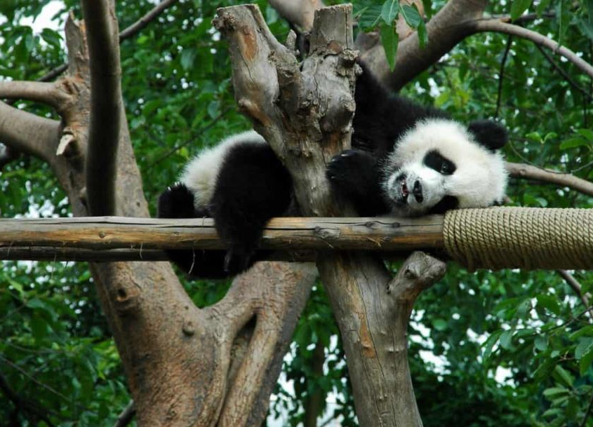
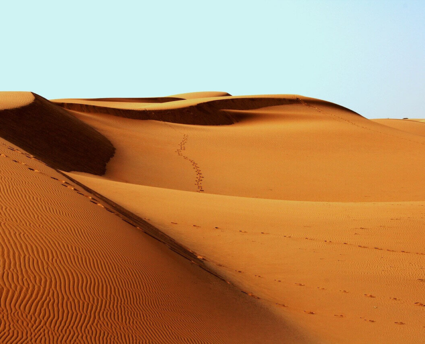

un ecosistema es el conjunto de organismos de una comunidad y su entorno, podemos definir varios tipos de seres vivos que los componen. Atendiendo a la cadena trófica, encontraríamos en primer lugar los productores primarios, aquellos que son capaces de producir materia orgánica a partir de compuestos inorgánicos, es decir, son organismos autótrofos. Siguiendo la cadena trófica encontramos en el segundo escalón a los consumidores, organismos heterótrofos (hervíboros, carnívoros u omnívoros) que se alimentan de materia y energía que fabrican otros seres vivos. En el último eslabón de la cadena trófica de organismos que componen un ecosistema encontramos los descomponedores, los que se alimentan de materia orgánica muerta.
ECOSISTEMA TERRESTRE: Dependiendo del sustrato en el que se encuentre, un tipo de ecosistema es el ecosistema terrestre. Sus características vienen dadas por la tierra en la que se desarrolla toda la actividad de los organismos vegetales y su fauna. Dentro de este, podemos distinguir a su vez varios tipos de ecosistemas terrestres, cada uno definido por el suelo y el clima en el que se encuentran, condicionando toda la vida que se desarrolla en él

ECOSISTEMA TERRESTRE: Dependiendo del sustrato en el que se encuentre, un tipo de ecosistema es el ecosistema terrestre. Sus características vienen dadas por la tierra en la que se desarrolla toda la actividad de los organismos vegetales y su fauna. Dentro de este, podemos distinguir a su vez varios tipos de ecosistemas terrestres, cada uno definido por el suelo y el clima en el que se encuentran, condicionando toda la vida que se desarrolla en él
ECOSISTEMA FORESTAL: Este tipo de ecosistema es aquel que tiene como vegetación predominante los árboles y la flora en general, y representa un 25% de la superficie terrestre del planeta.
Tipos de ecosistema forestales:
Tipos de ecosistema forestales:
ECOSISTEMA ACUATICO: Este tipo de ecosistema, por su parte, se distingue por desarrollarse en masas de agua. Podemos distinguir entre dos tipos de ecosistemas acuáticos: los de agua salada y los de agua dulce.